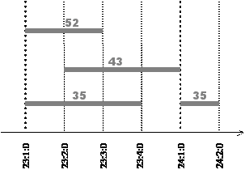
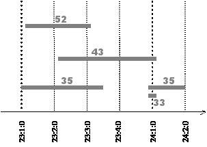

MIDI (Musical Instrument Digital Interface) is a standard for transmitting musical performance data between devices. With MIDI, each event of a performance (e.g., pressing or releasing a key of a piano) is encoded in a message. A typical MIDI message essentially consists of a code and a note, and says that a given key (corresponding to a given note) was pressed (the code NoteOn) or released (NoteOff code).
If we register all the events of a performance and associate a convenient time stamp with them, we will be able to reproduce the performance later with precision. We may also make many other things, like editing the data or producing a score in standard, human readable, music notation. This last application will be our focus: we want to prepare performance data stored in a file so that the production of a score becomes easy.
Figure 1 presents an example of a performance (4 notes, 8 events) and the corresponding data, in the form <code, note, time-stamp>. The time stamp is represented by the triple <measure:beat:tick>. To make things simpler, we will consider that a measure is a positive integer and has always 4 beats (numbered 1 to 4) and each beat has 480 ticks (numbered 0 to 479).
|  | NoteOn, 35, 23:1:0 NoteOn, 52, 23:1:0 NoteOn, 43, 23:2:0 NoteOff, 52, 23:3:0 NoteOff, 35, 23:4:0 NoteOn, 35, 24:1:0 NoteOff, 43, 24:1:0 NoteOff, 35, 24:2:0 |
Figure 1
This performance may be easily converted to standard music notation, as all the events occur at the exact beginning of a beat (tick 0). The same would happen if they occurred in points corresponding to subdivisions of the beat that match certain musical rhythm symbols. To simplify, we will consider divisions of the beats in 2, 4 and 8 parts as corresponding to legal musical notation; thus, if the events occur in ticks like 60, 240 or 420, the production of the score will be possible.
The events in Figure 1, however, could hardly be produced by an human. Humans can’t be so precise: their performances have subtle "imprecisions" in timing and in other parameters. These imprecisions make a direct production of a score virtually impossible. Figure 2 represents a possible human performance.
 |
NoteOn, 35, 23:1:006 NoteOn, 52, 23:1:017 NoteOn, 43, 23:2:010 NoteOff, 52, 23:3:015 NoteOff, 35, 23:3:252 NoteOn, 35, 23:4:473 NoteOn, 33, 23:4:478 NoteOff, 43, 24:1:011 NoteOff, 33, 24:1:012 NoteOff, 35, 24:2:003 |
Figure 2
We may see that the times where the events occur are close to "correct" points. For instance, the fourth event occurs close to 23:3:000, the fifth close to 23:3:240 and the sixth close to 24:1:000. To produce a readable score from this data, we may change the time stamps to make them fit the closest "correct" points: this process is called Quantisation.
The short note 33 near the beginning of measure 24 (in italic) represents a special case: after quantisation, its duration becomes zero. We will filter notes in these conditions.
Make a program that, given a performance consisting of a sequence of no more than 2.000 events, produces a new sequence after quantising the data. Notes whose duration becomes zero after quantisation must be filtered out. If a time stamp is equally close to two different correct points, quantise it to the upper point (for example, "23 1 30" becomes "23 1 60"). The program should be able to process several performances each time it runs.
Input
The input file represents several performances. Input for each performance consists of a sequence of lines, as follows:
First line: n
Next n lines (up to 2.000): code note m b t
The messages of a performance are ordered by increasing times.
Successive values on a line are separated by one blank. The integer -1 follows the data of the last performance.
Output
Output should give, for each given performance, the following output:
First line: n
Next n lines: code note m b t
The messages of each performance must be ordered by increasing times.
The integer -1 must follow the data of the last performance.
10
1 35 23 1 6
1 52 23 1 17
1 43 23 2 10
0 52 23 3 15
0 35 23 3 252
1 35 23 4 473
1 33 23 4 478
0 43 24 1 11
0 33 24 1 12
0 35 24 2 3
10
1 42 14 1 55
1 38 14 1 126
0 42 14 1 177
1 42 14 1 230
1 51 14 1 241
0 42 14 1 248
1 42 14 1 352
0 38 14 1 356
0 51 14 1 472
0 42 14 2 244
-1
Sample Output
8
1 35 23 1 0
1 52 23 1 0
1 43 23 2 0
0 52 23 3 0
0 35 23 3 240
1 35 24 1 0
0 43 24 1 0
0 35 24 2 0
8
1 42 14 1 60
1 38 14 1 120
0 42 14 1 180
1 51 14 1 240
1 42 14 1 360
0 38 14 1 360
0 51 14 2 0
0 42 14 2 240
-1